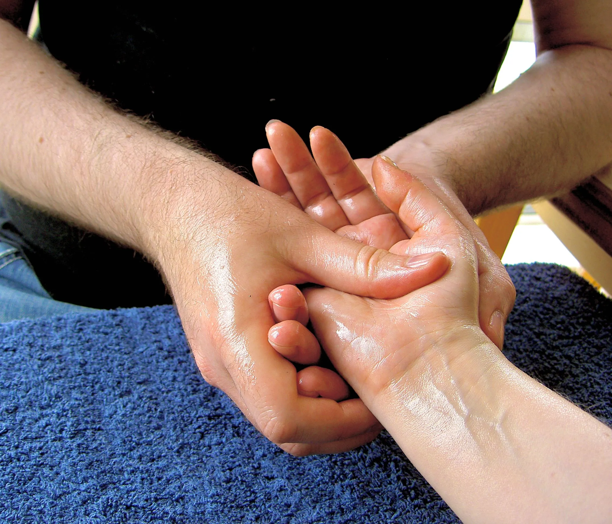

A gentle technique. A precise signal. A nervous system that does the rest.
Bowen therapy is a gentle, non-invasive technique that helps the body heal itself — addressing musculoskeletal pain, chronic conditions, and stress-related issues.
How it works
Using light rolling movements over muscles and connective tissue, Bowen therapy stimulates the nervous system, encourages relaxation, improves circulation, and supports the body's own ability to restore balance.
It's a holistic approach — well suited to anyone looking for a safe, sustainable alternative to more invasive conventional treatments.

What it's used for
- Back and neck pain — through gentle release rather than force.
- Joint discomfort — supporting mobility without invasive treatment.
- Headaches and TMJ disorders — often linked to nervous-system tension.
- Recovery from injury — working alongside the body's own repair process.
- Chronic stress — by shifting the nervous system out of a constant "on" state.
Why we teach it here
Bowen doesn't need a clinic full of equipment, and it doesn't take years to learn safely and well. That's exactly why it works as a foundation for community-based care: a practitioner trained in their own neighbourhood can treat their own neighbours, with nothing more than their hands and a proper apprenticeship behind them.
See how we train practitioners